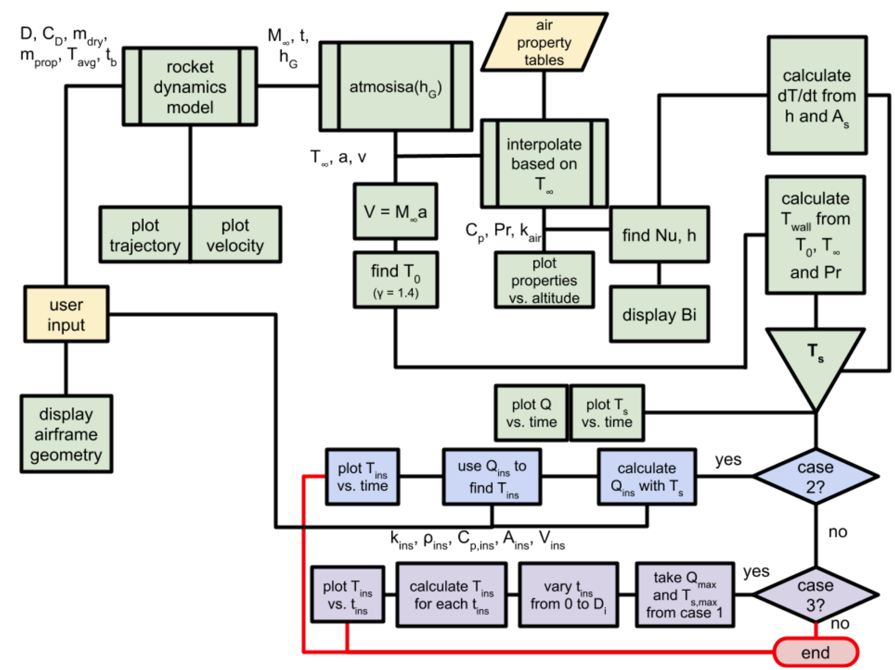

As part of the Thermal Sciences (AAE 33800) curriculum at Purdue University,
students are tasked with creating a project that will address a pressing
thermal sciences issue.
With Anish Agarwal, Shreesh Nalatwad, Noah Smith, and Will Stupart,
we chose to create an interface capable of estimating heat transfer and
approximating necessary insulation thickness to protect internals for
high altitude flight vehicles, particularly in the case of sounding rockets. This
was especially pertinent due to the volume of rocketry teams at Purdue in addition to the growing popularity of collegiate rocketry across the nation.

We determined three primary methods of heat transfer affecting a sounding rocket:
forced convection, convection due to compressibility effects, and conduction. We chose to neglect the effects of radiation for
simplicity and due to its presumed negligibility. The rocket experiences forced convection
due to the high speeds with which the air contacts the airframe, while the conduction occurs
in between the outer and inner airframe walls.
This would normally be a simple calculation if the rocket's altitude was fixed, but it is clear
that the thermal properties of air will change depending on altitude while the rocket's altitude
also behaves variably. For that purpose, the interface utilizes an iterative process that calculates
heat transfer and airframe temperature at each time step based on inputted airframe properties and
flight trajectory.
The governing equations for such an interface include simplified versions of Fourier's law of heat
conduction and Newton's law of cooling in addition to compressible flow relations. While forced
convection due solely to airflow does contribute some change in thermal characteristics of the airframe, the compressibility
effects are even more significant, making the outer airframe temperature calculations a combination of the
two heating methods. The air properties were linearly interpolated from a table provided by Haifeng
Wang in his Thermal Sciences textbook, which allowed the ambient air temperature, density, pressure,
kinematic viscosity, and specific heat capacity to be precise at any altitude.
To test the accuracy of the interface, we decided to find publications of heat transfer measurements taken during the flights of sounding rockets. When inputting the parameters of the sounding rockets into the interface, we were able to calculate the peak airframe temperature in MATLAB with ~7% error when compared to the actual peak heat flux in the publication. We also tested the interface's capability to estimate internal temperatures based on controlled insulation parameters; the MATLAB insulation simulations yielded an error of 9.91% for the inner airframe temperature compared to an Ansys Fluent/Transient Thermal Module simulation with the same insulation and airframe parameters. Of course, these simulations could be completed in 5 seconds or less, essentially leading to a potential simulation time reduction of 90% or more when compared to the Ansys Transient Thermal Module.